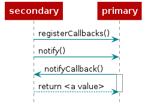

Example Applications¶
This section provides an overview of the out-of-box example applications available for DMM and what platforms each example support.
The DMM examples showcase different combinations of the supported TI stacks: BLE, TI 15.4, and Zigbee. The BLE connection is setup to demonstrate how the application can be designed to interact with the second stack and its network in order to provide features such as provisioning and reading out network data.
The example applications provided for DMM are developed for CC13xx or CC26xx devices, with the exception of CC13x1x3 or CC26x1x3 devices due to limited hardware features. Which devices each example supports are described below. For which development boards are supported, please refer to the example’s README.
Example Application Design¶
In examples where there exists communication between the different stacks, an “application communication interface” has been implemented. While each example defines a unique set of actions in regards to stack-to-stack communication, all of them use the same interface design concept.
In all examples, the BLE application is considered the “Interface primary”. In the context of the interface, “primary” simply refers to the application responsible for implementing the interface while the “secondary” is the other stack.
For each interface, the interface primary allows the secondary to register a set of callbacks that the primary can use to interact with the secondary. The set of callbacks varies depending on the use case. In addition to the callbacks, the primary may define a few functions which the secondary can use to interact with the primary.
For example, in the 15.4-Stack Sensor + BLE Remote Display example, the 15.4-Stack Sensor is acting as the secondary and can register callbacks for setting the report interval and reading the current sensor value. The BLE application also provides an API which the 15.4-Stack Sensor can use to notify the BLE application that the sensor data has been updated.
The sequence diagram below showcases the typical setup and usage of the
stack-to-stack interfaces. To see which callbacks and APIs that is available
for an example, see the BLE application remote_display.h header file.

Figure 30. Generic stack-to-stack interface communication between a secondary and a primary¶
Common User Interface¶
The Common User Interface (CUI) controls the access to User Interface
resources. On a LaunchPad, these resources are made up of Buttons, LEDs and UART
I/O. The CUI allows both of the two stack applications to use the resources. If
you want to read more about the CUI, you can see cui.h.
2.4 GHz Examples¶
Some of the DMM example projects have a *_2_4g suffix. These examples are
configured to use the 2.4 GHz PHY for the TI 15.4-Stack application. The
analogy would be the *_2_4g suffix TI 15.4-Stack example projects.
You can read more about the 2.4 GHz PHY for the TI 15.4-Stack in the TI 15.4-Stack User’s Guide.
OAD Examples¶
The examples that have oad as part of their names are enabled to do off-chip
over-the-air firmware upgrade (OAD) over BLE. You can read more about
this feature in the Over-the-Air Download (OAD) section. CC13x2x7 or CC26x2x7 also has on-chip OAD
variants for DMM projects involving 15.4-Stack or Z-Stack, see the BLE5-Stack User’s Guide
for more details regarding on-chip OAD operation.
SM Examples¶
Examples that have sm as part of their name showcase the TI 15.4 stack secure
commissioning feature. These examples uses a security manager which allows
secure commissioning to a TI 15.4 network via a BLE central such as a smartphone.
The SimpleLink Starter mobile application has built in support for this
service and provides a graphical overview of the commissioning process.
You can read more about how to use the mobile application in the example README
files.
More information on the TI 15.4 Secure Commissioning feature can be found in the TI 15.4-Stack User’s Guide.
Block Mode Examples¶
Most of the examples that operate at least one “end device” stack role allow for evaluation of the Block Mode feature. This include examples that implement at least one of the following stack roles:
TI 15.4 Sensor
BLE Peripheral
Zigbee End-Device
For more information on how to use it for a given example, please see the
README.html included with the respective application source code.
Running the Applications¶
For information on how to run the example applications below, please see the
README.html included with the respective application source code.
List of Example Applications¶
TI 15.4 Sensor + BLE Remote Display Example Application¶
LaunchPads supported: CC1352X(7), CC2652R(7), CC2652RB, CC2652XSIP, CC1312R, CC1354P
Stack roles: BLE Peripheral + TI 15.4 Sensor
These example projects showcase a Bluetooth 5 enabled TI 15.4 Sensor node. The BLE
profile Remote Display can be used for provisioning the TI 15.4 sensor as
well as monitoring the sensor when connected to a network. The examples
demonstrate a more complex stack combination and DMM policy.
Note
When operating the TI 15.4 sensor in Frequency Hopping mode, provisioning might cause the BLE connection to be dropped. In this case, the BLE connection can be re-established once the sensor has joined the network.
Depending on what platform is used, different variants of the example are available to showcase either a Sub-1 GHz or 2.4 GHz TI 15.4 sensor. The TI 15.4 Sensor can be configured to operate in either Non-beacon, Beacon or Frequency Hopping mode. The default mode of operation for all TI 15.4 examples is Non-beacon mode. How to change between the different modes are described in the project README files.
Note
The TI 15.4 Frequency Hopping mode within DMM applications is validated with 50 channels (Frequency Hopping Channel Mask and Frequency Hopping Asynchronous Channel Mask).
Sub-1 GHz TI 15.4 Sensor: CC1352R, CC1352P-1/2/4, CC1312R, CC1354P
In this example, the TI 15.4 Sensor is operating in the Sub-1 GHz range using non-beacon mode.
2.4 GHz TI 15.4 Sensor: CC1352R, CC1352P-2/4, CC2652R, CC2652RB, CC2652RSIP, CC1354P
In this example, the TI 15.4 Sensor is operating in the 2.4 GHz band using non-beacon mode.
TI 15.4 Collector + BLE Remote Display Example Application¶
LaunchPads supported: CC1352R(7), CC1352P-1/2/4, CC2652R(7), CC2652RB, CC2652RSIP, CC1312R, CC1354P
Stack roles: BLE Peripheral + TI 15.4 Collector
These example projects showcase a Bluetooth 5 enabled TI 15.4 Collector. The BLE
profile Remote Display can be used for provisioning the TI 15.4 network as
well as monitoring other sensors in the network.
Depending on what platform is used, different variants of the example are available to showcase either a Sub-1 GHz or 2.4 GHz TI 15.4 collector. The TI 15.4 network can be configured to operate in either Non-beacon, Beacon or Frequency Hopping mode. The default mode of operation for all TI 15.4 examples is Non-beacon mode. How to change between the different modes are described in the project README files.
Sub-1 GHz TI 15.4 Collector: CC1352R, CC1352P-1/2/4, CC1312R, CC1354P
In this example, the TI 15.4 Collector is operating in the Sub-1 GHz range using non-beacon mode.
2.4 GHz TI 15.4 Collector: CC1352R, CC1352P-2/4, CC2652R, CC2652RB, CC2652RSIP, CC1354P
In this example, the TI 15.4 Collector is operating in the 2.4 GHz band using non-beacon mode.
Zigbee Coordinator Switch + BLE Remote Display Example Application¶
LaunchPads supported: CC1352R(7), CC1352P-2, CC2652R(7), CC2652RB, CC2652RSIP, CC1354P
Stack roles: BLE Peripheral + Zigbee Coordinator
This example project showcases BLE and the Zigbee running together using the DMM. The example enables a concurrent Zigbee coordinator device and a Bluetooth 5 peripheral. A BLE central such as a smart phone can be used to start the Zigbee network and begin commissioning other devices onto the network.
Information on how to provision the Zigbee network and how to use the available BLE characteristics is found in the example README.
Zigbee End Device Switch + BLE Remote Display Example Application¶
LaunchPads supported: CC1352R(7), CC1352P-2, CC2652R(7), CC2652RB, CC2652RSIP, CC1354P
Stack roles: BLE Peripheral + Zigbee End Device
This example project showcases BLE and the Zigbee running together using the DMM. The Zigbee application is acting as an end device switch while the Bluetooth 5 peripheral provide provisioning and monitoring functionality.
The example is meant to be used in conjunction with a Zigbee light coordinator
example (zc_light or the Zigbee light DMM example). Information on how to
provision the Zigbee device and how to use the available BLE characteristics is
found in the example README.
Zigbee Router Light + BLE Remote Display Example Application¶
LaunchPads supported: CC1352R(7), CC1352P-2, CC2652R(7), CC2652RB, CC2652RSIP, CC1354P
Stack roles: BLE Peripheral + Zigbee Router
This example project showcases BLE and the Zigbee running together using the DMM. The Zigbee application is a router running a light device application while the Bluetooth 5 peripheral provide provisioning and monitoring functionality.
The example is meant to be used in conjunction with a Zigbee light coordinator
example (zc_light or the Zigbee light DMM example). Information on how to
provision the Zigbee device and how to use the available BLE characteristics is
found in the example README.